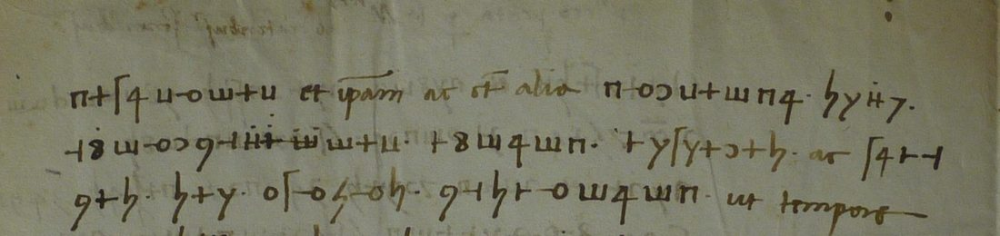
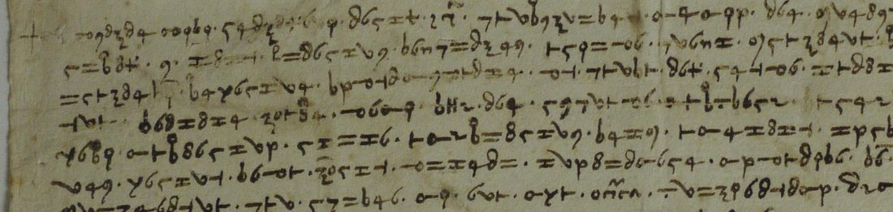
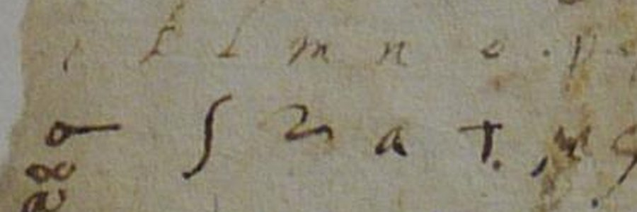

At a glanceKey recovered from the ciphertext alone, partial · four letters deciphered (96%, 87%, 79%, 59%)
- The documents
- The bundle of cipher letters of the Concistoro of Siena: 25 pieces photographed, letters from Sienese envoys and others to the Signoria, the Balìa and the Priori, from before 1429 to 1547.
- Where
- Archivio di Stato di Siena, Concistoro 2308, fasc. 2 “Lettere in cifra”. On DECODE as records R4790–R4814 (letters) and R4746–R4789 (keys), all catalogued “1500–1599” with no status.
- The ciphers
- Each letter has its own key: simple substitutions with a few extra signs for common letters, word points kept in some, Latin code words in the 1456 letter.
- How they were deciphered
- No filed key fits any letter. Three keys were recovered from the ciphertext alone by a staged annealing search with an Italian or Latin language model; the fourth was rebuilt from an alphabet fragment written below the letter and the recipient’s glosses.
- What they say
- A lord’s route into Sienese territory by Lajatico, Radicondoli and Casole; a treaty with the Emperor against the Florentines at Ponte a Valiano; envoys reporting the “gielosia” of Carlo Malatesta; Naples and the Lucca promises in 1456.
- Still open
- The 1421 letter (no. 1) and four others were never photographed. Two long ciphers of about 4,300 and 4,900 signs resist every solver tried; seven short pieces have no key.
01The bundle, and where it was found
Aloys Meister saw the bundle in 1902 as “Lettere in cifra e loro chiavi”, in two fascicles: Cifrari, 42 original keys, 18 of them of the fifteenth century and the oldest dated 1433; and Lettere in cifra, 29 pieces, “dated no. 1 1421; no. 4 1456; no. 11 1478; no. 17 1528”. Giovanni Cecchini’s printed inventory of the Concistoro (1952) lists it as no. 2308, “Cifrari e lettere cifrate”, and says the letters are only partly deciphered. The Ilardi microfilm at Yale (reel 1503) put only the first thirteen frames online, all of them keys, so the letters were taken to be out of reach.
They are on DECODE. The whole busta was photographed in the Siena reading room: the keys are records R4746–R4789 (Concistoro_2308_01 to _43), the letters R4790–R4814 (_44 to _68),
behind a cover sheet reading “Fasc. 2, Pezzi 25”. DECODE dates every letter “1500–1599” and gives none a status; the dates and identifications below come from the letters themselves.
The pencil numbers on the pieces match Meister’s dated items, so they are his numbering. What the photographs hold:
| No. | DECODE | What it is | Outcome here |
|---|---|---|---|
| 1, 2 | — | not photographed (no. 1 is Meister’s 1421 letter) | needs the archive |
| 3, 5 | R4792, R4791 | clear private letters | no cipher |
| 4 | R4793 | Galgano Borghesi to Leonardo Benvoglienti, Naples, 12 May 1456 | key rebuilt from a fragment on the letter; 114 of 144 signs |
| 6, 24 | R4795, R4812 | two letters to the Signori in one cipher, about 4,300 signs | open |
| 7 | R4796 | an orator at Milan to the Officials of the Balìa, 1450s | open (short) |
| 8 | R4797 | slip of about 1440–47 with its decipherment on the same sheet | deciphered at the time |
| 9, 19, 21 | R4798, R4807, R4809 | short cipher runs in clear letters | open (short) |
| 10 | R4799 | one run glossed “presura di Montepulciano” | deciphered at the time |
| 11 | R4800 | Donato Acciaiuoli to Lorenzo de’ Medici, Rome, 13 June 1478 (a Florentine letter) | open (no key) |
| 12 | R4790 | letter in graphic signs; DECODE marks its second photograph (R1858) decrypted | not re-examined |
| 13, 16 | R4801, R4804 | a slip of 1527–29 and its clear decipherment | deciphered at the time |
| 14 | R4802 | Sienese envoys to the Priori and Capitano del Popolo, before 1429 | key recovered from the ciphertext; 59% in sense |
| 15 | R4803 | Mario Bandini at Charles V’s court, Dec 1546 / Jan 1547 | open (short; candidate key R4764) |
| 17 | R4805 | to Antonio del Vescovo, orator, August 1528, “questa cifra è quella di Balìa” | open (short) |
| 18 | R4806 | Latin treaty articles between Siena and the Emperor, 1510s–20s | key recovered from the ciphertext; 87% |
| 20, 23 | R4808, R4811 | a letter to a king and a full page, one cipher, about 4,900 signs | open |
| 22 | R4810 | drafts of a letter of 1455–58, clear and numbered versions side by side | deciphered at the time |
| 25 | R4813 | slip to the Signoria about a lord’s route | key recovered from the ciphertext; 96% |
| 29 | R4814 | scrap of a word list, not a letter | not a letter |
| — | R4794 | unnumbered slip in graphic signs with the numbers 44, 26, 67, 74 | open (short) |
| 26–28 | — | not photographed | needs the archive |
02The 43 keys, and why none of them fits
The key fascicle is a fine run of Sienese chancery ciphers: a key of 1433 for Antonio Petrucci (Meister’s example), the “Cifra cum fratre Bernardino” of the time of the antipope Felix, the key of the ambassadors at Milan of 1454, a key for the podestà of Casole, Antonio Bichi’s of 1478, keys of the Borgia years naming Duke Valentino and Pandolfo Petrucci, a letter-key dated 4 August 1502, the 1536 key, and code books of the 1540s. Their alphabets were compared by eye with the sign sets of every letter. Six fifteenth-century keys (R4750, R4753, R4754, R4756, R4757, R4762) were transcribed in full and tested sign by sign on nos. 4 and 7, and four later ones (R4760, R4764, R4768, R4778) on nos. 15, 17 and 20.
No filed key deciphers any letter. The nearest miss is instructive: no. 7, from an orator at Milan in the 1450s, looked made for the 1454 Milan key (R4750), but the letter’s own interlinear glosses give values that contradict it, a fifth of its signs are not in the key, and the key’s only sign for e is 2.5% of the letter. The keys that went with these letters travelled with the envoys and were not filed. Every letter below was broken without one.
03No. 25: a lord on the road to Casole
A slip of eleven lines, 496 signs in 65 words divided by points, all in cipher. Its 22 signs are built on a running horizontal stroke: uprights with one, two or three bars, crosses, a Greek-looking π. The transcription was made from the DECODE photograph; a staged annealing search over the words with an Italian language model gave the key with no crib, and a check of every doubtful word on the image separated two look-alike signs (a plain y is m, a hooked χ is r). 477 of the 496 signs (96.2%) fall in words that make Italian sense; 18 are in two words not yet understood and one sign, standing alone, is unread.

Noi aviamo chompr(e)so che questo signiore no chavalcharà per lo modo che chostoro di qui vorevero, e diliverà senza altra presa fare di qui partirsi e d’esare chostà; e crediamo sarà sabato prossimo; e farano la via di Laiaticho, e poi di là si partirano, e l’altro dì sarano a Radichondoli, e per quello paese e ancho a Chasole, e per paese poi chostà. E però richordiamo a la signioria vostra che ne’ detti luoghi faciate provedere di pane, viada, vituagia, chome vi pare chovenirsi … per fante propio significharemo a la magnificie(n)za vostra.
“We have understood that this lord will not ride in the way those here would like, and has decided, without further delay, to leave here and come there; we think it will be next Saturday. They will take the road by Lajatico, leave from there, and the day after be at Radicondoli, and through that country and Casole on to you. So we remind your lordship to have bread, fodder and victuals laid in at those places as you think fit.” The envoys write from the Volterra side, on the road that enters the Sienese state at Radicondoli and Casole. The slip is undated and the lord is not named.
04No. 18: the treaty articles with the Emperor
Four pages of Latin articles in which every sensitive word is in cipher: 212 cipher words, 1,459 signs, written with points between them in the running Latin. The first block is subscribed “Niccolaus Ziegler, Regis Secretarius”, the secretary of Maximilian I and later of Charles V. The same search, with a Latin model, gave the key from the ciphertext alone; a sign-by-sign check on the images split three look-alike pairs (a hooked n is q, a plain one e; a plain o is g; an open double loop is i, a closed one ll) and showed that dotted signs are nulls. 1,271 of 1,459 signs (87.1%) read as Latin sense, 154 more are in doubtful words, 21 are unread and 13 the scribe struck out.

Item quod Senenses mutuent Serenissimo domino Regi quinque milia ducatorum, pro quibus Mx. se obligabit de restituendo eosdem in termino duorum mensium. … Item quod ad petitionem Serenissimi Regis & Cesaree Maiestatis teneantur domini Senenses rumpere bellum contra X. in partibus Pontis Valiani …
Siena is to ready its artillery, powder, stones and balls, put its troops in order and lend the King 5,000 ducats repayable in two months. The imperial side asks that B. take the city under its protection, that Siena open war on X. at Ponte a Valiano (the fortress of the Montepulciano war), give passage and victuals for a war on the Florentines, and furnish at its own cost a hundred men-at-arms and sixty light horse. The Sienese ask for every castle taken within five miles of their border, and for the Emperor to judge their claims against Florence. The letters B. and X. stay in clear and are not resolved; X. is the enemy. The year is not given: Ziegler, a King and an Emperor as two parties, and Ponte a Valiano point to the 1510s or 1520s.
05No. 14: the envoys, and Carlo Malatesta
A whole page in cipher, 23 lines and a subscription, to the “Magnificis et potentibus dominis Prioribus [et] Capitaneo Civitatis Senarum”: 1,495 signs in words divided by points. A plain annealing search stuck on pseudo-Italian; three hand cribs on repeated words (vostra, stato) found the key, and the staged search later reached the same key with no crib. Reading it on the image split two glyphs the first transcription had merged (an o with a stroke in from the left is m, with a stroke out to the right d) and two more (a compact 8 is v, a tall looped one n). 876 of 1,495 signs (58.6%) are in words read as sense, 436 (29.2%) in words with a doubtful letter, 161 (10.8%) unread, and 22 are code signs.

… per la gracia di dio noi arivamo qui [h]ieri da sera salvi e […] la nostra compa(n)gnia … significhiamo a la Signoria vostra come questa matina, trovandosi Domenico con uno servidore di <7H> […] a ragionare per spacio da ore due … ancora afferma l’amico vostro che Carlo [M]alatesti e ogni altro sono in questa medesima gielosia … L’Altissimo acresca e conservi la magnifica Signoria vostra, a la quale umilmente ci racomandiamo.
The envoys arrived “yesterday evening” with their company. Domenico spent two hours with a servant of a lord written <7H>, who is displeased with an enterprise “given by <Z7> to (420)”; Carlo Malatesta and the others share the same jealousy; they think Siena and the rest of Tuscany, united with “the three powers”, could openly make war on <Z7>; <7H> is in the field and may yet come to terms. The subscription names Rome as the place of writing and a signatory ending “Marco”. Carlo Malatesta of Rimini died in 1429, so the letter is no later; it is the one piece in the bundle that could be close to Meister’s no. 1, but it carries no date and 1421 cannot be claimed for it.
06No. 4: Galgano Borghesi at Naples, 12 May 1456
A letter in clear Italian with fifteen runs of cipher (144 signs) and nine Latin code words, from the jurist Galgano Borghesi, on embassy to King Alfonso, to his colleague Leonardo Benvoglienti; Senatore (2009) cites it as “una lettera in cifra di Borghesi a Benvoglienti … da Napoli, 12 maggio”. The recipient glossed some runs between the lines (“duca”, “papa”, “per parte del duca”, “al re”): this is the partial decipherment behind the 1952 inventory’s phrase. None of the six 1450s keys fits. Below the text, torn away on the left, an alphabet is written out over its cipher signs, i to u; with the glosses it gives the key. 114 of the 144 signs read securely, 11 more from context, 19 remain unread.

The runs, with the clear words round them, tell how Borghesi pressed the King to include the promises made “when Lucca was besieged by the Florentines” al capitano; the papers de le scritture were said to have stayed a Milano, and Tunc rex parvi fecisse; Antonio d’Arezzo reported al <duca> well disposed; the Pope, del chericato of the Florentines and the cardinals were to contribute contra lo Turcho, and the Duke’s message was to be referred al re. Code words: Calor = duca, storps = Lucca, cras = parte.
07The pieces deciphered at the time
- No. 8 (c. 1440–47): a ciphered slip pasted below its own decipherment, which mentions the antipope Felix, the Duke of Milan, Bianca Maria and Leonello d’Este, and Niccolò Piccinino.
- No. 10: one run glossed letter by letter “presura di Montepulciano”.
- Nos. 13 and 16 (1527–29): no. 16 is the clear decipherment of no. 13, on the Pope’s coming to Bologna and the taking of Modena and Reggio.
- No. 22 (1455–58): four drafts of one letter, about signal fires, spingarde and “la lettera di Calisto”; a clear draft pairs with one where numbers stand for key words (4 = L., 7 = denari, 15 = parti, 16 = accordo, 17 = speranza).
08Method
Every piece was transcribed from the DECODE photographs by line crops at three to six times native size, sign by sign, with a named inventory of shapes; nos. 15 and 18 were transcribed twice and compared. The solver is a homophonic annealing search (a sign may stand for any letter, several signs for one letter), scored by an Italian or Latin n-gram model of the period and a letter-frequency prior, run in stages from trigrams to five-grams with restarts seeded by frequency; where the scribe divides words, the model scores the spaces too. The same program recovers a synthetic Italian homophonic cipher of 2,673 signs and 58 symbols perfectly. Every key it produced was then checked word by word on the images, and each disagreement resolved there: that is how the look-alike signs of nos. 14, 18 and 25 were separated.
09What remains
- No. 1 (1421), nos. 2, 26, 27, 28: not among the DECODE photographs. Only the Archivio di Stato di Siena can supply them; the 1421 date, which would be older than the project’s oldest reading, stays untested.
- Nos. 6 + 24 (about 4,300 signs) and nos. 20 + 23 (about 4,900 signs): two systems, each shared by two letters. The solver that recovers the synthetic control fails on them in every variant tried (Italian, Latin, Catalan and Spanish models; nulls; signs for letter pairs), so they are probably not plain letter substitution as transcribed: syllabic or code signs, or look-alike signs merged. A fresh transcription by one hand with a fixed inventory is the next step.
- No. 11 (Florentine, 1478, 409 signs): no key; Gabbrielli’s index of Florentine keys has none for Donato Acciaiuoli. Nos. 7, 9, 15, 17, 19, 21 and R4794 (46 to 363 signs): too short to break without a key, and no filed key fits; no. 15 has a candidate, R4764, transcribed but not matched.
- No. 14: 436 signs in doubtful words and 161 unread, mostly the first lines, lines 13–15 and the subscription; the codes <7H>, <Z7>, (420) and a circled sign are not identified. No. 18: 21 doubtful words (the ω-shaped sign reads m, tt or n) and five unread words; B., X., S. and Mx. unresolved. No. 4: 19 rare signs unread.
10Sources
- Archivio di Stato di Siena, Concistoro 2308: DECODE records R4790–R4814 (letters), R4746–R4789 (keys) and R1858.
- A. Meister, Die Anfänge der modernen diplomatischen Geheimschrift (Paderborn 1902), pp. 50–51.
- G. Cecchini (ed.), Archivio del Concistoro del Comune di Siena. Inventario (Pubblicazioni degli Archivi di Stato X, 1952), p. 366.
- F. Senatore, “Callisto III nelle corrispondenze diplomatiche italiane”, Revista Borja 2 (2009): identifies no. 4.
- Yale Dataverse, Ilardi microfilm reel 1503 (keys only) and reel 58 (Gabbrielli’s Florentine key index).
Manuscript rights: Archivio di Stato di Siena.
Transcriptions, keys, readings and solvers: siena1421/ in the repository.